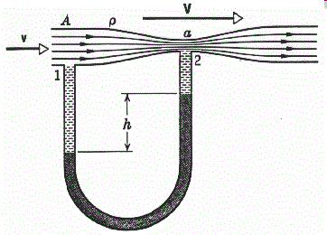
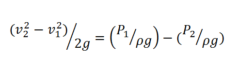
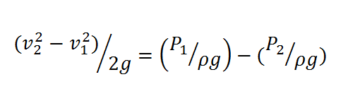
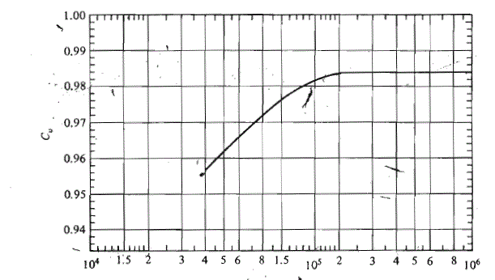
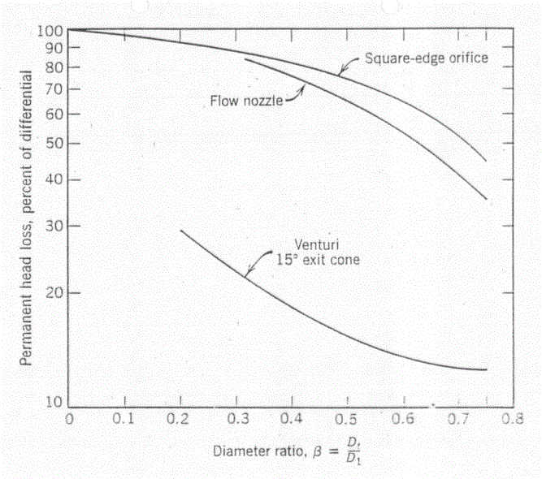
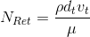
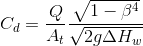
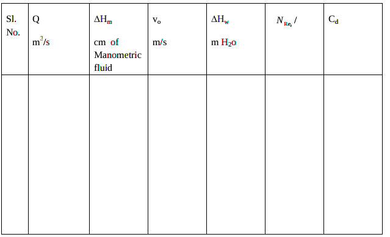

Experiment No.4: Flow through Venturi meter
Background and Theory
Introduction
Flow meters are used in the industry to measure the volumetric flow rate of fluids. Differential pressure type flow meters ( Head flow meters)measure flow rate by introducing a constriction in the flow. The pressure difference caused by the constriction is correlated to the flow rate using Bernoulli’s theorem.
If a constriction is placed in a pipe carrying a stream of fuid,there will be an increase in velocity,and hence an increase in kinetic energy ,at the point of constriction.From an energy balance as given by Bernoulli’s theorem,there must be a corresponding reduction in pressure.Rate of discharge from the constriction can be calculated by knowing this pressure reduction,the area available for flow at the constriction ,the density of the fluid and the coefficient of discharge Cd. Coefficient of discharge is the ratio of actual flow to the theoretical flow and makes allowances for stream contraction and frictional effects. Venturi meter, orifice meter, and Pitot tube are widely used head flow meters in the industry. The Pitot-static is often used for measuring the local velocity in pipes or ducts. For measuring flow in enclosed ducts or channels, the Venturi meter and orifice meters are more convenient and more frequently used. The Venturi is widely used particularly for large volume liquid and gas flows since it exhibits little pressure loss. However, for smaller pipes orifice meter is a suitable choice. In order to use any of these devices for measurement it is necessary to empirically calibrate them. That is, pass a known volume through the meter and note the reading in order to provide a standard for measuring other quantities.
Venturi meter:
One of the disadvantages of orifice meters is the large irreversible pressure loss
across the orifice, which results in substantial pumping costs in case of large
diameter pipes. However, the same principle can be exploited with only minimal
pressure loss with the use of a Venturi meter. In this case, the meter consists of a
section with both a smooth contraction and a smooth expansion. Because of the
smoothness of the contraction and expansion, the irreversible pressure loss is low.
However, in order to obtain a significant measurable pressure drop, the
downstream pressure tap is placed at the “throat” of the meter; i.e., at the point of
the smallest diameter. Venturimeter is used to measure the rate of flow through a
pipe. Venturimeter consists of a converging portion, throat and a diverging portion.
The function of the converging portion is to increase the velocity of the fluid and
temporarily lower its static pressure. The pressure difference between inlet and
throat is developed. This pressure difference is correlated to the rate of flow. The
expression for theoretical flow rate is obtained by applying the continuity equation
and energy equation at inlet and throat section.

For measuring discharge we should apply Bernoulli’s equation at point 1 and at point 2.The
following treatment is limited to incompressible fluids. Friction is neglected , the meter is
assumed to be horizontal and there is no pump. If v
1 and v
2 are the average velocities at point 1
and point 2 respectively and
.gif)
is the density of fluid.
.gif) Since
Since .gif) ------(1)
------(1)
Now applying the equation of continuity at both points, we have
.gif) ------------(2)
------------(2)
.gif) --------(3)
--------(3)
.gif) --------- (4)
--------- (4)
where d
1 and d
2 are the diameters at point 1(pipe) and at point 2(throat) respectively.
Now putting the value of V
2 in the above expression (1) and if
.gif)
=d
2/d
1, we have
.gif) -------- (5)
Q=A2V2-----------(6)
-------- (5)
Q=A2V2-----------(6)
.gif) -------- (6)
-------- (6)
Qth is the theoretical flow rate as computed from Eq.(6) and applies to frictionless flow of
incompressible fluids. Actual flow includes frictional loss between point 1 and 2.So to account
for small friction between points 1 and 2,
.gif) -------- (6)
-------- (6)
Where C
D is called as co-efficient of discharge and it depends upon the type of flow, type of
fluid and dimensions of venture tube and pipe.
.gif) -------- (6)
-------- (6)
It is the ratio of actual flow rate to the theoretical flow rate.
For a well designed venture the constant CD is about 0.98 for pipe diameters of 2 to 8inches and
about 0.99 fro larger sizes.
The equation relating flow rate to pressure drop is
.gif)
Where C
D is the coefficient of discharge for venturimeter.
is the crosssectional
area of the throat and
is the ratio of throat diameter to pipe diameter.
For a Venturi,C
d=0.99 for 10
5 < N
Re < 10
7 is a useful approximation.
The pressure recovery is much better for the venturi meter than for the orifice
plate.
The main advantages of the Venturi over the orifice plate are :
- low head loss.Around 90% of the pressure is recovered.
- less affected by upstream flow disturbance
- good performance at higher
- even more robust
- The venturi tube is suitable for clean, dirty and viscous liquid and some slurry
services
- self-cleaning
- less affected by erosion
The disadvantages compared to the orifice are :
- occupies longer length of pipe
- more expensive (manufacture and installation)

Discharge Coefficients against Reynold’s Number (QD
tV
t/
.gif)
)
D
t and V
t are the thoat diameter and velocity at the throat respectevily.

Comparison of permanent head loss caused by different head meters
Venturimeter

Venturimeter
- Throat to diameter ratio 0.25 to 0.75
- Discharge co-efficient - 0.9 to 1.0
- Made of cast iron, gun metal, stainless steel
Procedure
FLOW THROUGH VENTURI METER
Aim of the Experiment:
To calibrate venturimeter with different
* ratios. Determine the flow head relationship for this
flow meter.Determine the effect of Reynolds number on the coefficient of discharge (C
D).
*
is the ratio of throat diameter to pipe diameter
Apparatus required: CCL
4manometer, H
g manometer
Procedure:
- Keep the bypass valve completely open and the main valve completely closed. Switch on
the pump.
- Connect a CCL4 manometer,Hgmanometer across the venturi.
- Open the main valve and set a flow rate of water using the rotameter.
- Note down the rotameter reading and manometer reading after a steady state is attained.
- Increase the flow rate by opening the main valve and throttling the bypass valve suitably
and repeat step 4.
- Use mercury manometer for higher flow rates.
- Take readings with CCL4 manometer, Hg manometer as well as with Hg manometer.
- Repeat the experiment with different ratios and with different fluids.
Data:
Diameter of the pipe = d = cm
Diameter of the venture throat= d
t= cm
Density of CCL
4 =
.gif) CCL4
CCL4 = kg/m
3
Density of Hg =
Hg = kg/m
3
Density of fluid =
= kg/m
3
Viscosity of fluid =
= cp
Observations :
 Calculations :
Calculations :
Flow rate:
.gif)
Hm= cm of manometric fluid.
Volumetric flow rate = Q = m
3/s
.gif)
= m of H
2o
m= density of manometric fluid.
Average velocity through the throat =V
t=Q/A
t= m/s
A
t = Cross sectional area of throat =

=d
t/d=
Reynolds Number at the throat =  =
Coefficient of discharge = C
d = 

Plot Q vs
.gif)
and Q vs
.gif)
on ordinary graph(calibration).
Plot C
d vs N
Ret on a semilog graph sheet (with N
Reton log scale).
Plot log Q vs log
.gif)
.Find the slope and the intercept. Find the coefficient and power of
. Comment on the nonlinear flow head relationship. Obtain C
d from the plot.
Results:
- Report on calibration
- Comment on Cd vs NRet
- Report the Cd
- Comment on flow head relationship
- compare Cd for orifice and venturimeter
Assignment
1.Derive the flow equation for the venturi meter from first principles.
2.Collect information on other types of flow meters, their principle and working
Reference
- Warren Lee McCabe, Julian Cleveland Smith, Peter Harriott ,Unit operation of chemical engineering , 5th Edition,1993
- Coulson and Richardson, Chemical Engineering Volume I Pargamon Press 3rd edition.1977
- Walter L. Badger and Julius T. Banchero, Introduction to Chemical engineering.. Tata McGraw-Hill book Edition 1997,India
- Perry's Chemical Engineers' Handbook (7th Edition) Edited by Perry, R.H.; Green, D.W. © 1997 McGraw-Hill
- A. S. Foust, Principles of Unit Operations, 2nd ed. John Wiley and Sons, Inc., 1980
- Industrial Instrumentation by Donald P Eckman, Wiley Eastern Publication
- Lecture notes by M.Subramanian http://www.msubbu.in/ln/fm/
Contributors List
- Prof. Vidya Shetty K, Department of Chemical Engineering, NITK
- Karthik | Department of Chemical Engineering, NITK
- Amogha V Somayaji | Student, Department of Chemical Engineering, NITK | 181CH006
- Haneena| Virtual Lab Intern at NITK Surathkal-SCEM, Mangalore | 4SF18CS048
- Jaison DSouza B | Virtual Lab Intern at NITK Surathkal-SCEM, Mangalore | 4SF17CS062
- Erin Sheryl Pereira | Virtual Lab Intern at NITK Surathkal-SCEM, Mangalore | 4SF18CS044
- Anusha B Salian | JRF - CSD, NITK
- Akshaya | JRF - CSD, NITK